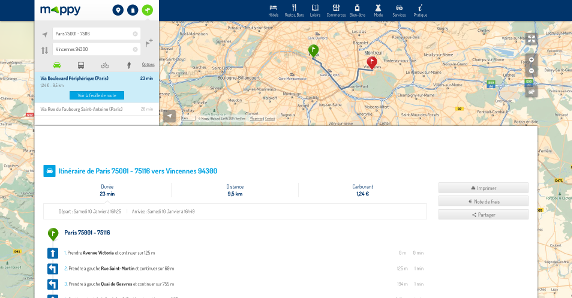
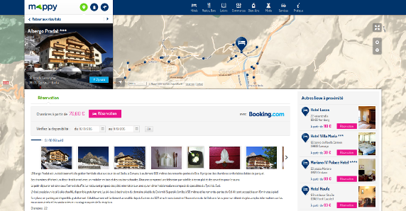
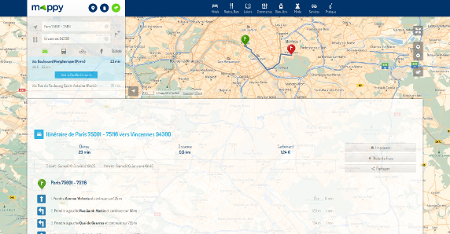
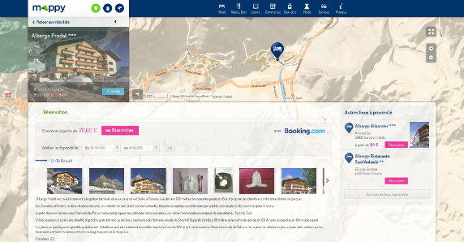

Un plugin Leaflet pour le site mappy.com
Lors de la mise en place de Leaflet sur mappy.com, (comme présenté dans un billet précédent), nous avons eu l'occasion de développer un plugin Leaflet, proposé en open-source.
Mise en avant de la carte
L’un des objectifs de cette nouvelle version fût de mettre en avant la carte dans l’interface, qui n'occupait qu’une petite partie de l’interface de la version précédente. Ainsi, sur les pages de fiche POI ou sur la feuille de route, la carte occupe tout l’écran, du haut en bas de l’écran.
Cela est surtout visible sur les grandes résolutions, où chaque bord laisse place à la carte comme le témoignent les captures d’écran suivantes :

Feuille de route d’un itinéraire

Comme on peut le voir sur les images ci-dessus, et vu que la carte occupe presque tout l’écran, les informations - marqueurs et polyline - ne sont pas centrées. Le centre de la carte correspond au centre de l’écran, caché derrière les éléments HTML. Cela est plus visible lorsque l’on rend transparents ces éléments HTML comme le montrent les captures suivantes :

Feuille de route d’un itinéraire avec fond transparent

Fiche POI avec fond transparent
Les appels à l’API Leaflet (centrage de la carte, centrage de la vue en fonction de marqueurs, d’un itinéraire) vont naturellement avoir pour centre de la carte le centre de l’écran si celle-ci en occupe la quasi-totalité.
Le plugin Leaflet-active-area
Afin de pouvoir afficher des marqueurs ou un itinéraire de façon excentrée, nous avons développé un plugin Leaflet pour abstraire ce comportement.
Il s’agit du plugin Leaflet-active-area qui, comme le montre la page d’exemple, permet d’appeler les méthodes usuelles de Leaflet telles que setView, setZoom, fitBounds tout en "centrant" la carte à partir d’une autre zone.
Le principe est de définir une classe CSS, positionnée de façon absolue, qui sera prise en compte comme zone active de la carte. Ainsi, le centre de la carte sera le centre de cette zone et l’ensemble des marqueurs ou tracés y seront placés.
Disponible sous license Apache 2.0
Il nous a paru évident, utilisant une API open-source utilisée et développée par une énorme communité de développeurs, de proposer ce plugin en open-source. Il est disponible sur github et référencé dans “la page des plugins” du site leaflet.
A ce jour, nous avons même reçu la contribution de plusieurs développeurs hors Mappy avec l'ouverture - et l'acceptation - de 4 pull requests, la création puis la résolution de plusieurs issues. N'hésitez pas à contribuer !